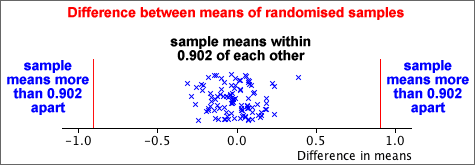

Simulation and randomisation
Simulation and randomisation both involve randomly generated data sets.
Randomisation of samples from two populations
Consider random samples from two populations. If these populations are identical, any of the sampled values could have equally belonged to either population. Random variations of the data can be generated by randomly allocating the values to the two samples.
The diagram below gives an example of two-group data and a random allocation of the 101 values to the two groups.
Test for equal population means
In the example above, the mean for Group A was 0.902 higher than that for Group B. To examine whether the underlying population means are equal, we can find how far apart the sample means would be in randomised variations of the data.
The diagram below shows the difference between the Group A and Group B means for 100 randomised variations of the data.

A difference between sample means as large as that recorded would be unusual if both underlying populations were the same, so
We conclude that there is strong evidence that the population means for the two groups are different.